[[ Note du Traducteur : Thomas Stevens est le premier cycliste à avoir fait le tour du monde ; par la même occasion il est le premier cycliste à avoir traversé les Etats-Unis d'océan à océan ; les 4 premiers chapitres relatent sa traversée des Etats-Unis. ]]
A Travers la Terre des Mormons et par les Montagnes Rocheuses
Le temps est frais et tonifiant, et quand, au milieu de l'après-midi, j'atteins Evanston, dans le Territoire du Wyoming, trop tard pour dîner à l'hôtel, je me mets à dévorer le contenu d'une boulangerie, remplissant le propriétaire d'un étonnement sans bornes en consommant environ les deux tiers de son stock. Quand je termine de manger, il refuse carrément de me compter quoi que ce soit, se considérant bien remboursé en ayant été témoin du plus extraordinaire fait gastronomique jamais enregistré, l'engloutissement des deux tiers d'une boulangerie !
Evanston
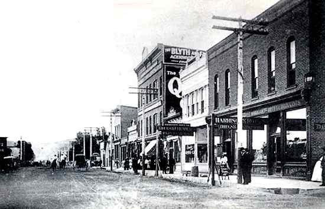
Continuant le chemin en aval vers Yellow Creek, j'arrive à Hilliard après la nuit. Les Hilliardites sont "un peu bizarre," mais ils sont faits du bon matériau. La patronne de la pension de famille se met à me préparer un souper, peu importe qu'il soit tard ; et les "garçons" me font la cordiale invitation de passer la nuit avec eux. Ici à Hilliard il y a un long flume [[ Ndt : sorte de toboggans en V alimentés en eau, sur lesquels les troncs des pinèdes descendaient en flottant, des montagnes où ils étaient abattus jusqu'au chemin de fer ; il arrivait que des bûcherons empruntent ces toboggans dans des barques, pour des opérations de maintenance par exemple. Le plus long des flumes faisait 100 kilomètres ! Source : http://maindorailhistory.org/1_logging/flumes.htm ]] en forme de V, de trente miles de long [[ Ndt : environ 48 kilomètres ! ]], dans lequel des poteaux télégaphiques, des poutres et du bois de chauffage arrivent en bas en flottant jusqu'au chemin de fer depuis les pinèdes des Monts Uintah, maintenant nettement visibles au sud. Les "garçons" mentionnés prédédemment sont des hommes chargés de la manutention des poutres de sorte qu'elles flottent jusqu'en bas ; et assis autour du poêle, ils égayent la soirée avec des chansons et des récits de manutentionnaires de troncs, et de descentes folles le long du flume en "V" [[ Ndt : Les troncs étaient amenés à Hilliard sur un long flume propriété de la Hilliard Flume and Timber Company depuis les Monts Uintah au sud. Une voie du flume, d'environ 30 miles de long débutait à Gold Hill et allait jusqu'à Hilliard. Source : http://www.wyomingtalesandtrails.com/evanston.html ]].
Flume
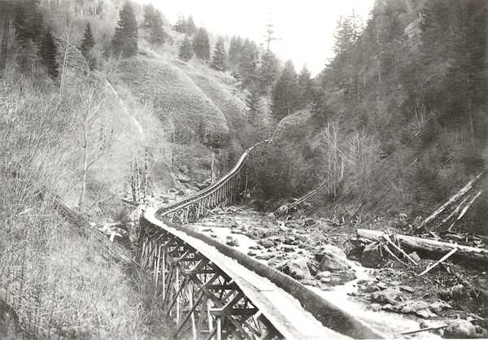
Ces " hommes du bois " forment un groupe heureux, au coeur léger, et il ne passe pas un soir sans que leur pauvre baraquement ne résonne à gogo de leur gaieté. La joie est dans l'air ce soir, et "Castor" (ainsi surnommé en raison d'une fâcheuse tendance à tomber dans tous les trous d'eau dont il s'approche) est la créature malchanceuse sur qui les boutades grossières se concentrent ; et il est encore tombé dans l'eau aujourd'hui, et est activement occupé à sécher ses vêtements sur le poêle. Ils l'accusent d'entretenir un feu trop chaud, au détriment du confort de tous sauf du sien, et le menacent de terribles sanctions s'il ne laisse pas la chambre refroidir ; ils laissent également fermement entendre leur désapprobation pour son penchant excessif pour la "bière d'Adam" [[ Ndt : "Adam's ale" est une expression populaire du début du 19ème siècle et signifie en fait : eau ! Allusion au fait que l'Adam de la Bible n'avait que de l'eau à boire. Source : https://en.wikipedia.org/wiki/Adam%27s_ale ]] et menacent de lui faire dorénavant payer une tournée chaque fois qu'il tombera. Pour se venger de ces remarques, " Castor " empile encore plus de bois dans le poêle et avec une rudesse de mots propre à l'Ouest - dont la reproduction n'est pas autorisée - menace d'entretenir un tel feu qu'il les chassera tous du baraquement s'ils persistent à le malmener.
Traversant le lendemain le vaste et peu élevé col des Mont Uintah, où je parcours quelque portions de surface cyclable, je vois à ce moment la première bande d'antilopes du voyage ; mais comme elles n´entrent pas dans la distance règlementaire des deux cents yards je leur laisse généreusement la vie [[ Ndt : peut-être une loi qui interdit de tirer les animaux à plus de deux cents yards - 183 mètres - de distance, sans doute à cause du risque de seulement les blesser. ]]
A Piedmont je décide de faire le tour par Fort Bridger et reprendre la piste directe à Carter, vingt quatre miles plus a l'est.
Le jour suivant a midi je suis "enfoncé dans mon petit lit" [[ Ndt : "tucked in my little bed" - Source de cet extrait de phrase : https://goo.gl/Pb8JMS - tiré d'une phrase du livre de petites histoires pour enfants Play-Day-Book, publié en 1857, de Fanny Fern ; Fanny Fern (Sara Willis Parton, dite Fanny Fern, américaine, 1811-1872) est une chroniqueuse populaire, humoriste, romancière, et auteur de contes pour enfants qui a connu une immense popularité dans les années 1850-1870 ; en 1852 elle devint la première femme de lettres a disposer d'une chronique régulière dans la presse. Source : https://fr.wikipedia.org/wiki/Fanny_Fern ]] à Carter [[ Ndt : minuscule hameau nommé du nom de l'influent William Alexander Carter (1859-1881), entre autre : commerçant, rancher, postier, juge de paix, juge administratif ; un des citoyens les plus en vue du comté de Green River, à l'époque où passa Thomas Stevens. Le Juge Carter était connu pour sa convivialité. Il s'efforçait de mener la vie d'un gentleman, avait une excellente bibliothèque et un piano Steinway. C'était un Republicain et un membre de l'Eglise Episcopale Methodiste. Marié à Mary Elisabeth ils eurent six enfants. Sources : http://www.fs.usda.gov/Internet/FSE_DOCUMENTS/fsm9_002074.pdf et http://genealogytrails.com/wyo/uinta/fortbridgerhistory.html ]], décidément bien mal en point, ayant connu les vingt quatre heures les plus difficiles de tout le voyage.
Hameau de Carter
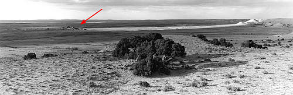
Source http://drakehokanson.squarespace.com sur cette page https://goo.gl/krQdK0
Je dus passer à gué pas moins de neuf cours d'eau glacée ; me retrouve surpris par la nuit sur une plaine d'argile détrempé, où je dors toute cette nuit dans un chariot de marchandises abandonné; et, après avoir porté le bicycle à travers sept miles d'argile épaisse, collante, j'arrivais enfin à Carter, avec l'apparence du dernier piteux vestige d'une terrible calamité, n'ayant rien eu à manger pendant vingt-quatre heures. De Carter ma route mène à travers les Mauvaises Terres [[ Ndt : Mauvaises Terres (Badlands en anglais) désigne un paysage ruiniforme des terrains marneux ou argileux, raviné par les eaux de ruissellement. Source : https://fr.wikipedia.org/wiki/Badlands_(géomorphologie) ]], au milieu de buttes d'argile et de roches mêlées, que les éléments ont érodées de toutes les formes imaginables, et notables parmi elles, au sud, "Church Buttes" [[ Ndt : buttes en gré érodé, dans le comté de Uinta dans le Wyoming. Source : https://en.wikipedia.org/wiki/Church_Buttes ]], ainsi nommées pour avoir été ciselées par la main adroite de la nature en un groupe de dômes et de pinacles, qui, de loin, ressemblent étonnamment à quelque magnifique cathédrale. Les marques d'un niveau élevé d'eau sont observables sur ces buttes, montrant que le déluge de Noé, ou une autre calamité aqueuse se produisit une fois ici ; et on peut facilement imaginer des hordes misérables d'indiens à demi vêtus, perchés au sommet, regardant avec une expression malheureuse, mélancolique, les eaux sauvages qui les entouraient. En arrivant à Granger, pour le dîner, je trouve à l'hôtel une ambiance de découragement à peu près semblable à la morosité de Tacoma. Tacoma avait beaucoup de clients, mais pas de whisky ; Granger, au contraire, a beaucoup de whisky, mais pas de clients. L'effet sur ce quelque chose de merveilleux, ce quelque chose d'intangible : l'intellect du propriétaire de saloon, est le même aux deux endroits. Voici clairement un nouveau champ de recherche pour certains étudiants ambitieux de psychologie. Whisky sans clients! Clients sans whisky! Vraiment tout est vanité et poursuite du vent.
Church Buttes
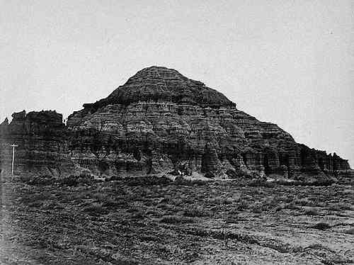
Le jour suivant je passe par les roches crénelées de renommée momdiale de Green River, et m'arrête pour la nuit à Rock Springs, où la Compagnie de Chemin de Fer Union Pacific possède de vastes mines de charbon. Quand je demande ma note à l'hôtel, le matin suivant, le propriétaire - un Teuton corpulent, dont les pensées, les paroles, et les actions portent toutes sur la bière - répond, "Vingt-cinq cents la chambre" [[ Ndt : peut être un trait d'humour de Stevens en relation avec l'amour de la bière de son interlocuteur ; Stevens dans le texte original utilise le mot "quarter" qui signifie chambre, mais aussi un quart de gallon (soit un litre) ]]. Pensant que mon système auditif est en faute, je m'enquiers une nouvelle fois. "Vingt-cinq cents la chambre et en plus j'ai astiqué votre engin." La note est anormalement élevée, mais, alors que je cède sur le montant, un "loaded schooner" [[ Ndt : expression imagée signifiant littéralement une goëlette chargée, et aussi et en l'occcurrence un grand verre rempli de bière. ]] est poussé sous mon nez, comme si un verre de bière était un antidote susceptible d'apaiser tous les maux de la vie. De superbes plaines d'alkali abondent à l'est de Rock Spring, et le nez dans le guidon je les traverse à bonne vitesse jusqu'à ce qu'elles se terminent, et mon itinéraire se poursuit jusqu'à Bitter Creek, où la surface est tout le contraire ; accidentée et sillonnée comme si elle venait d'émerger d'une inondation dévastatrice. On dit que le charretier qui fait la route avec succès jusqu'à Bitter Creek, s'attribue le droit de porter le titre de "un rude type de Bitter Creek, sur roues, et d'une parfaite politesse". Une juste considération des droits de chacun semble appuyer ma propre prétention à ce titre distingué, ayant parcouru cette route à bicycle.
Green River
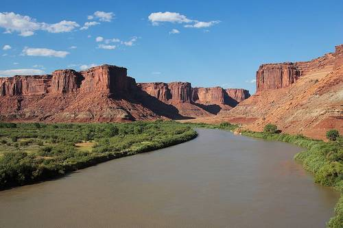
Rock Springs, en 1897
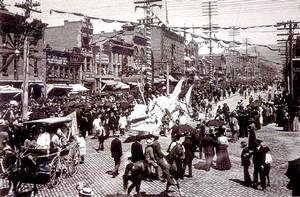
Source http://www.dupinternational.org/jubilee/index.htm
sur cette page https://goo.gl/CpQGFI
A dix heures le lendemain matin je suis appuyé sur mon bicycle, parcourant du regard le paysage de la "Continental Divide" [[ Ndt : Ligne de Partage des Eaux d'Amérique du Nord. Source : Wikipedia http://goo.gl/F2CWcp ]] l'épine dorsale du continent. Face au nord, toutes les eaux à ma droite coulent vers l'est, et toutes celles à ma gauche coulent vers l'ouest - les premières finissant par arriver à l'Atlantique, les autres au Pacifique. Cet endroit est un large passage peu élevé à travers les Rocheuses, plus un plateau qu'une montagne, mais d'où on a une vue plus imposante sur de nombreuses chaînes de momtagnes. Au nord et au nord-ouest sont les chaînes Seminole, Wind River, et Sweet-water, robustes chaînes de montagnes audacieuses, complétant le paysage lointain du nord par une masse de grandes piles rocheuses déchiquetées, grandes au-delà de l'imagination ; leurs nombreux sommets enneigés peuplant l'espace éthéré bleu avec des formes spectrales fantomatiques bien calculées pour inspirer des sentiments de crainte et d'admiration à un cycliste solitaire, qui, dans le silence et la solitude profonde du grand Continental Divide, regarde et médite sur ce qu'il voit. D'autres monarques chenus sont visibles à l'est, avec lesquels nous ferons aussi connaissance plus tard. La route en descente est la règle maintenant, et s'il y avait une bonne route, quelle agréable descente en roue libre ce serait, la descente de la Continental Divide! mais la moitié de celle-ci doit être parcourue à la marche. A environ dix-huit miles de la Ligne je suis très amusé, et pas qu'un peu étonné, par le comportement étrange d'un coyote qui vient en trottant tranquillement et en confiance vers moi ; et quand il atteint un point offrant une bonne vue sur ma route, il s'arrête et regarde mes mouvements avec un air de grande curiosité et de confiance en lui. Il se dresse et me regarde fixement alors que je roule lentement, à pas plus de cinquante yards de lui [[ Ndt : environ 45 mètres. ]], et il ressemble tellement à un colley bien nourri, que j'ai comme envie de tapoter mon genou pour l'attirer et que nous fassions amis. Tirer sur lui? Certainement pas. On n'abuse pas d'une confiance comme ça. Il peut venir frotter son manteau au poil soyeux contre le bicycle s'il en a envie, et - tout scélérat assoiffé de sang qu'il est sans aucun doute - je ne lui tirerai jamais dessus. Il a autant le droit de regarder avec étonnement un bicycle comme n'importe qui qui n'en a jamais vu un avant.
Après avoir passé la nuit et le jour suivant à Rawlins, je fait les seize miles jusqu'à Fort Fred Steele le matin qui suit, avant de déjeuner, profitant d'une très bonne route entre ces deux endroits.
Rawlins, fin 19ème siècle
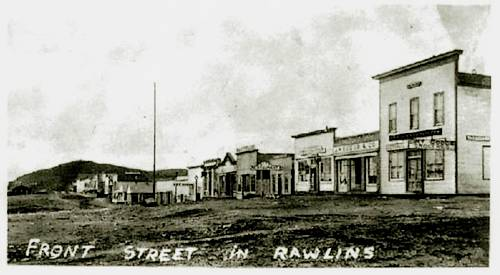
Fort Steele, fin 19ème siècle
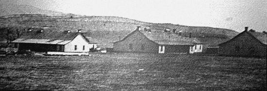
Ce fort se tient sur la rive ouest de la rivière North Platte, et à quelques miles à l'ouest de la rivière je roule à travers la première colonie de chiens de prairie rencontrée depuis que j'ai entrepris la traversée du continent depuis l'ouest [[ Ndt : PHOTO colonie de chiens de prairie https://framapic.org/EbPacr4FCRzF/Pi0vgxwmKNh1.jpg et PHOTO de chien de prairie https://framapic.org/YIdD3m2wLi7F/9UF8jRGiiXJv.jpg ]], mais je rencontrerai quantité de ces intéressants petits drôles pendant les prochains trois cents miles [[ Ndt : Les chiens de prairie sont un genre de rongeur ; leur cri s'apparente à l'aboiement du chien. Ils vivent en colonies rassemblant jusqu'à plusieurs centaines de terriers dans une même zone ; aux Etats-Unis ce colonies sont également appellés villes ou villages (town en anglais , c'est d'ailleurs ce terme qu'emploie Stevens dans le texte original) ]]. Ces animaux restent assis près de leur terrier et aboient frénétiquement après tout ce qui passe à proximité. Ils n'ont jamais eu avant l'occasion d'aboyer après un bicycle, et ils semblent tirer le meilleur parti de cette opportunité.
Colonie de chiens de prairie
Dessin du 19ème siècle
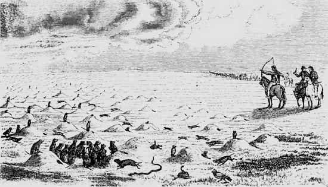
Chiens de prairie à côté de leurs terriers
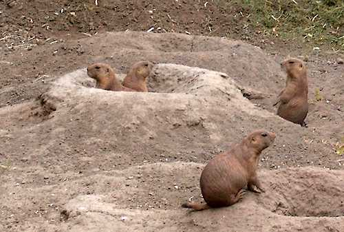
Dans ce village je ne vois aucune de des petites chouettes tachetées, qui, avec le serpent à sonnette, se sentent tellement chez elles dans les habitations douillettes des chiens de prairie, mais je les verrai plus avant vers l'est. Il est possible que ces trois compagnons étrangement assortis [[ Ndt : le chien de prairie, la chouette tachetée et le serpent à sonnette ont une couleur voisine ]] aient une chaleureuse amitié l'un envers l'autre ; mais on est enclin à penser que le grand lien d'amitié qui les lie est le tendre regard avec lequel la chouette et le serpent à sonnette considèrent le savoureux et tendre jeune chien de prairie qui apparaît par intervalles pour stimuler les émotions et les soucis de ses congénères plus avisés.
Serpent à sonnette et chouette tachetée
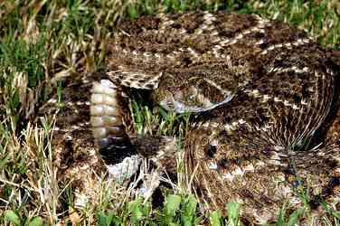 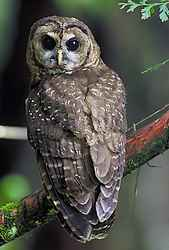
J'emprunte maintenant les fameuses Laramie Plains [[ Ndt : Plaines de Laramie, plaines entourées de montagnes, dans l'Etat du Wyoming Source : https://en.wikipedia.org/wiki/Laramie_Plains ]], et Elk Mountain surgit à pas plus de dix miles au sud ; une masse puissante et très élevée de roches noires et de sombres forêts de pins, qui se démarque massive et distincte des chaînes de montagne à l'entour comme une chose animée consciente de sa force et de sa supériorité. Une tempête de neige fait rage sur ses pentes supérieures, occultant cette partie de la montagne; mais le bas des pentes couvertes de forêt sombre est visible, et aussi le pic robuste qui élève sa tête couronnée de blanc au-dessus de la tempête, et repose paisiblement dans la lumière du soleil en contraste frappant avec les éléments tempêtueux plus bas. J'ai entendu de vieux chasseurs affirmer que ce fameux «point de repère des Rocheuses» est creux, et qu'ils ont entendu des loups hurlant à l'intérieur de la montagne ; mais certains de ces vieux chasseurs de l'ouest voient et entendent d'étranges choses!
Elk Mountain
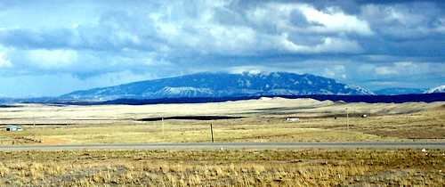
Quand j'entre dans les Plaines de Laramie [[ Ndt : plateau aride situé dans le Wyoming ; situé à une altitude d'environ 2400 mètres ]], la tenace Artemisia californica qui a constamment rôdé autour de mon chemin depuis les les derniers mille miles, croît beaucoup moins, et la courte, nutritive herbe de bison s'étend maintenant partout. A Carbon [[ Ndt : ville dans l'Etat du Wyoming, maintenant en ruine, fondée en 1868 sur la ligne du Chemin de Fer Union Pacific et nommée ainsi en raison de ses mines de charbon ; en 1884, quand Thomas Stevens passe dans la ville, celle-ci compte environ 500 habitants, ainsi que des centaines de migrants originaires du Royaume-Uni, de Chine et des pays scandinaves travaillant dans les mines en pleine activité, trois saloons, trois épiceries, un magasin de chaussures, les marchés de viandes, une banque, une imprimerie, un barbier, un forgeron et quatre hôtels. En 1902 les mines de charbon fermèrent définitivement et la ville fut abandonnée progressivement au cours des 10 années qui suivirent. Source : http://www.wyohistory.org/encyclopedia/carbon-wyoming et http://www.hannabasinmuseum.com/carbon-city-story.html ]], où j'arrive la nuit tombée, je mentionne parmi d'autres choses et en réponse à l'habituelle salve de questions, le fait de devoir faire à pied une si grande partie du parcours à travers cette région montagneuse ; et peu après, provenant d'un groupe d'hommes, j'entends une voix lourde et rauque due au "valley tan" [[ Ndt : valley tan est une expression originaire de la Vallée de Salt Lake où une des premières industries était le tannage du cuir ; l'expression valley tan s'est étendue pour désigner tout produit de fabrication locale, puis tout produit fait-maison plus ou moins grossièrement, y compris le whiskey. Dans les années 1870 c'était aussi le nom d'une marque de whiskey fabriqué par les mormoms en Utah, Etat voisin du Territoire du Wyoming où Stevens se trouve quand il écrit ces lignes.
Mark Twain dans son livre de voyage Roughing it publié en 1872 fait allusion au whiskey Valley Tan, au début du chapitre 13, suite à une indisposition d'un compagnon de voyage nommé Bemis ; extrait : 'Mais nous sûmes après que c'était quelque chose qu'il avait bu. C'était le rafraîchissement exclusif des mormons, “valley tan.” Valley tan (ou, en tout cas, une variante de valley tan) est une sorte de whiskey, ou son cousin le plus proche ; c'est une invention des mormons et se produit seulement en Utah. La tradition dit qu'il est fait de feu et de soufre. Si je me souviens bien, aucun débit de boissons public n'était autorisé dans le royaume de Brigham Young - [ Ndt : second président de l'Eglise des Saints des derniers Jours (mormons) fondateur de Salt Lake City et premier gouverneur de l'Utah ] - , et aucune consommation d'alcool en privé, sauf s'ils se limitaient au "valley tan"'. ]] qui déclare : "Vrai, j'pourrai conduire moi-même un bicycle a travers l'région si v'm'éclairiez en marchant a pied!" et aussitôt un bouquet lumineux de trèfles miroite un bref moment dans l'air, puis disparait [[ Ndt : le trèfle est depuis le 18ème siècle un symbole de l'Irlande ; allusion sans doute au fait que l'individu qui l'a interpellé est un immigrant irlandais (nombreux à travailler dans les mines à l'époque) ]].
Carbon City
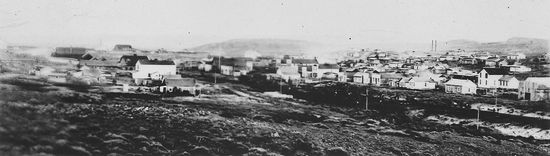
Bouteille de Valley Tan
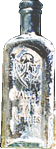
Page précédente - Page suivante
ADMINISTRATIVIA
Dernière mise à jour de cette page : 20 avril 2017
URL : http://orkic.github.io/bicygonzo/atwoab/chap3/deux.html
Contactez-nous : Contact
Website © Copyright - ef. Bicy Gonzo.